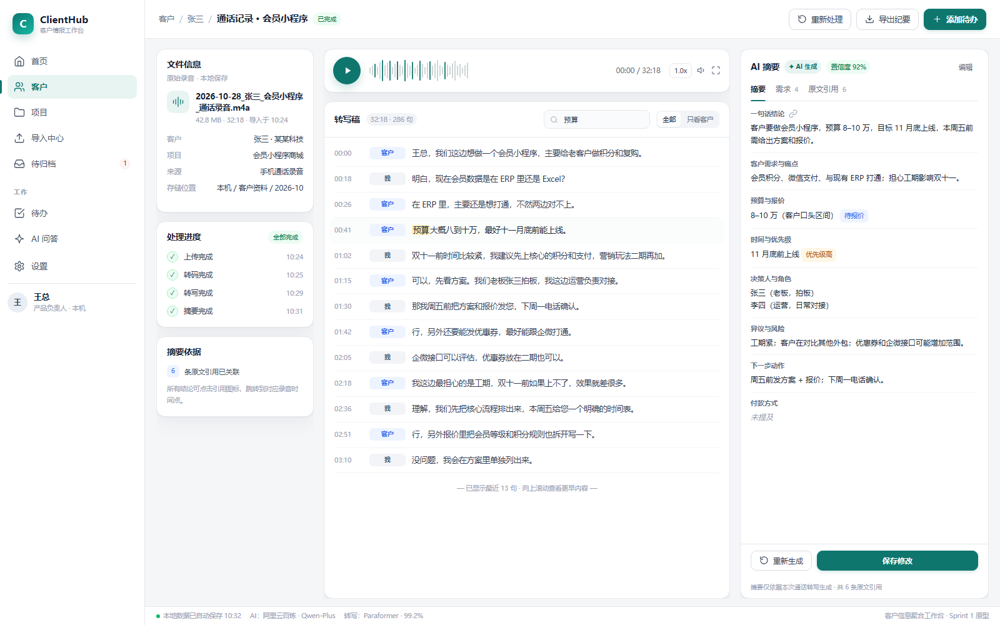
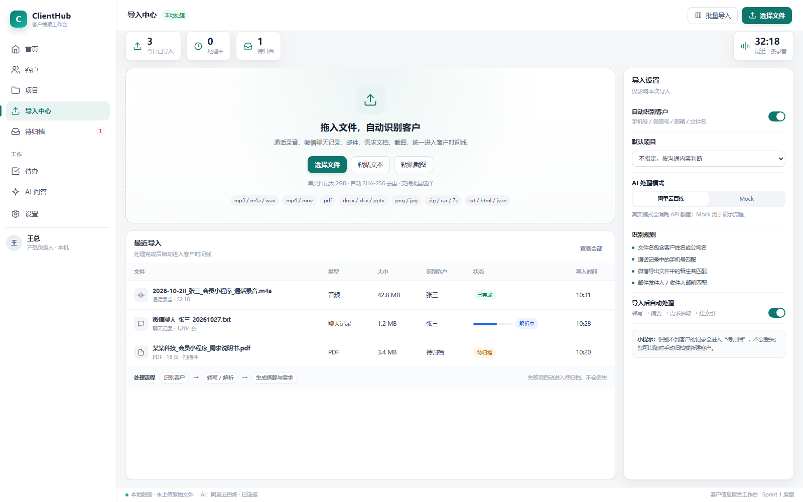
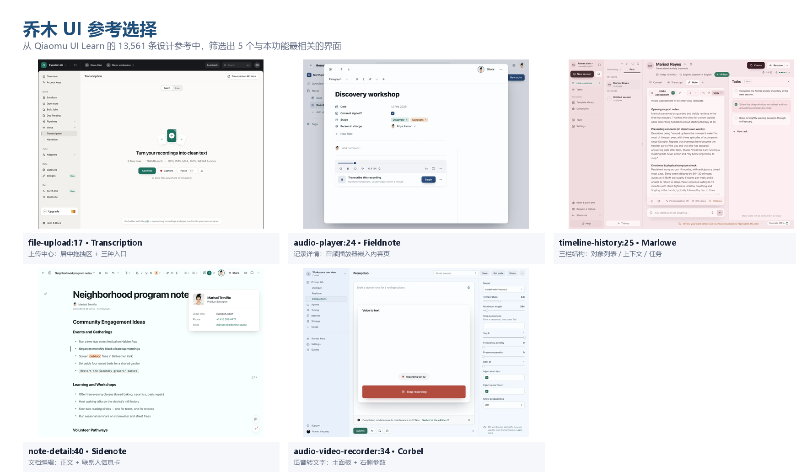

基于 PRD Sprint 1 与 Qiaomu UI Learn 的参考设计，融合成一套适合「客户信息聚合工作台」的 Windows 桌面端界面。两个页面覆盖导入、转写、摘要、校对与重新生成的完整链路。

左侧文件信息与处理进度，中间音频播放器 + 时间戳转写稿，右侧固定七字段 AI 摘要与原文引用。

拖拽/批量选择、粘贴文本/截图、自动识别客户、SHA-256 去重、待归档提示与 AI 处理模式切换。

从 Qiaomu UI Learn 的 13,561 条设计参考中，筛选出 5 个最相关的界面：Transcription、Fieldnote、Marlowe、Sidenote、Corbel。